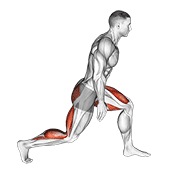
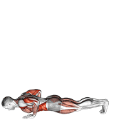
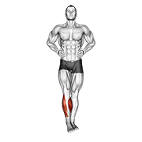
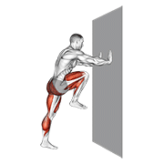

热身与整理
一句话结论：热身是把心率拉到最大心率的 60-70%、并让踝髋肩活动到不卡顿，全程 15 分钟起、25 分钟封顶；整理是冷身 2-3 分钟把心率降到 100bpm 以下，再做 6 个部位各 30 秒的静态拉伸。两件事都做满，你的第一拍才和最后一拍一个质量，第二天才不带着酸痛上训练课。
热身时间计算器
15分钟标准热身方案
- 慢跑/高抬腿 — 2分钟，逐渐提高心率
- 开合跳 — 1分钟，激活全身肌肉
- 手臂环绕 — 前后各10次
- 躯干转体 — 左右各10次
- 弓步走 — 每侧8步
- 侧向移动 — 每侧8步
- 脚踝环绕 — 每侧10圈
- 弹力带外旋 — 2×15次（肩袖激活）
- 蚌式开合 — 2×15次（臀中肌激活）
- 分腿蹲 — 2×8次/侧（下肢激活）
- 徒手挥拍 — 20次慢速
- 轻力对打 — 1分钟
重要原则：热身前不做静态拉伸！静态拉伸会降低肌肉力量。动态拉伸才是正确的热身方式。
25分钟比赛热身方案
分层处方 — 热身与整理（三档照做）
先说两个词。最大心率（HRmax），白话就是"你全力跑 30 秒也追不上去的那个心跳数"，业余常用 220 减去年龄来估。RPE 是主观用力程度，1-10 分制，10 分是拼到说不出话，2-3 分是能边走边聊天的慢跑。热身第一阶段的目标是把心率拉到 HRmax 的 60-70%，不是 85%。三档的差别不在"热身多久"，而在"专项那一段有多像比赛"。
基础版 打到微微出汗
- 各阶段分钟数：血液循环 3 分钟 + 动态拉伸 5 分钟 + 神经激活 3 分钟 + 专项 4 分钟，合计 15 分钟。
- 剂量：2×15 次弹力带外旋、2×8 次/侧分腿蹲、开合跳 30 次，动作固定 4 周不换。
- 强度：全程 RPE 2-3（能正常说话）；心率目标按 HRmax 百分比走：前 3 分钟 55-65%，第 15 分钟 60-70%（30 岁约 114-133bpm），用手摸颈动脉数 15 秒再乘 4。
- 整理：冷身 2-3 分钟把心率降到 100bpm 以下，再 6 个部位各 30 秒静态拉伸，合计 10 分钟。
- 频率：每次打球都做，每周 3 次以内；两次训练之间不设热身上限，但同一天二练需间隔 ≥4 小时。
- 单次训练时长上限：热身 15 分钟，整理 10 分钟。热身超过 20 分钟开始出汗流失体力，就说明做多了。
- 进阶触发：连续 4 次训练，热身结束时能打出正常质量的高远球，且整理后第二天小腿无紧绷感。
进阶版 加入落地控制
- 各阶段分钟数：5 + 6 + 5 + 8，合计 24 分钟；把神经激活加到 5 分钟是关键的一步。
- 剂量：敏捷梯 3 组、原地跳与侧向跳各 5 次、启动步 10 次、专项多球 20 个。
- 强度：RPE 4-6；心率第 5 分钟到 60-65%，专项段（最后 8 分钟）按 HRmax 70-80% 间歇执行：30 秒快 + 30 秒慢 × 6 组。
- 落地控制：原地跳与侧向跳各 5 次，要求落地后单脚站稳 3 秒不晃。
- 整理：冷身 3 分钟 + 静态拉伸 5 分钟（每部位 30 秒 × 2 轮）+ 泡沫轴 5 分钟，合计 13 分钟。
- 频率：每周 3-4 次训练；高强度训练之间间隔 ≥24 小时，赛前 24 小时内只做一次 15 分钟减量热身。
- 单次训练时长上限：热身 25 分钟，整理 15 分钟。热身到 25 分钟还没上场，脱衣降温、补水 150-200ml 再上。
- 进阶触发：连续 2 周，全场拉吊 2 分钟内动作不变形，且赛前热身后第一局失误不超过 3 个。
精英版 按上场时间倒推
- 各阶段分钟数：5 + 8 + 7 + 5-10，合计 25-30 分钟；场地冷、天气冷、身体紧时取上限，空调场馆取下限。
- 剂量：启动步 3 组 × 5 次（每次 ≤5 秒）、多球高远 20 个、吊球 10 个、轻杀 10 个、连场二次热身 3 组。
- 强度：RPE 5-7；赛前 10 分钟按 HRmax 70-80% 维持，赛前 5 分钟回到 HRmax 65-75%——这一段是刻意降下来的，不是冷掉。
- 恢复：两次大强度训练间隔 ≥24 小时；连场两赛之间间隔 ≥60 分钟，只做 10 分钟二次热身。
- 赛前启动时间轴：按开赛时间倒推，而不是按"到了场馆就开始"。具体见下方时间轴表。
- 整理：冷身 3 分钟（心率降到 90-100bpm）+ 静态拉伸 8 分钟 + 泡沫轴 5 分钟，合计 16 分钟；大强度课后加 10 分钟慢走。
- 频率：每周 5-6 次训练；比赛周热身总量下调 20%，但每次仍做满 25 分钟，只减专项段的对拉球数。
- 单次训练时长上限：热身 30 分钟封顶，整理 20 分钟封顶。连场（一天两赛）之间只做 10 分钟二次热身：慢跑 3 分钟 + 动态拉伸 4 分钟 + 挥拍 3 分钟。
- 进阶触发：能靠自我感觉把赛前心率控制在目标区间 ±5bpm 内，且连场第二场的首局启动速度与第一场一致。
赛前启动时间轴 — 赛前 45 / 20 / 10 分钟各做什么
比赛不是"到场就热身"。按开赛时间倒推，把每个时间点钉死，你就不用临场想安排。下面这套以 25 分钟比赛热身方案为骨架。
| 时间点 | 做什么 | 目标信号 |
|---|---|---|
| 赛前 45 分钟 | 换装、上厕所、补 200-300ml 水；开始慢跑与开合跳共 5 分钟，接着静态拉伸只做"感觉紧的那 1-2 个部位"各 15 秒 | 心率升到最大心率的 55-65%，身体微热，不喘 |
| 赛前 20 分钟 | 动态拉伸 8 分钟（踝→膝→髋→肩→颈，从下到上），神经激活 7 分钟（敏捷梯 3 组、启动步 10 次、落地控制各 5 次） | 心率到 70-80%，脚底"活了"，单脚站稳 3 秒不晃 |
| 赛前 10 分钟 | 上场适应：空挥 10 次、半场高远球 15-20 个、吊球加网前 10 个、轻杀 5 个；不要在这个阶段打满场对抗 | 能打出正常速度的高远球，动作不变形 |
| 赛前 2 分钟 | 心率降到 65-75%；喝两口水，做 4 轮 4-7-8 呼吸（吸 4 秒、屏 7 秒、呼 8 秒），说一个关键词 | 呼吸变慢，手心不冷，脑子只想着第一分怎么开 |
| 上场前 30 秒 | 两个固定动作：拍两下拍线、深呼吸一次。不要在这个时刻改热身方案或试新动作 | 身体进入"比赛模式"，不再想技术细节 |
如果检录叫号比你预想的早，把 45/20/10 压成 25/12/6 也成立，顺序不能换。反过来，等场超过 20 分钟，用 3 分钟慢跑把身体重新点着，别穿着湿衣服坐着等。
训练后整理方案
- 慢走 — 让心率从运动水平降到<100bpm
- 不要突然坐下 — 血液会淤积在下肢
- 小腿后侧 — 每次30秒
- 大腿前侧 — 每次30秒
- 大腿后侧 — 每次30秒
- 髋屈肌 — 每次30秒
- 胸部拉伸 — 每次30秒
- 前臂拉伸 — 每次30秒
- 泡沫轴 — 每个部位30-60秒
- 顺序：小腿→大腿前侧→大腿外侧→臀部→背部
- 重点：找到酸痛点停留20秒
训练后营养补充时间表
环境与年龄调整 — 同一套热身怎么改
热身时长不是死的。场地温度、年龄、当天训练内容，任何一个变了，分钟数和重点都要跟着动。
| 情形 | 怎么调 | 关键数字 |
|---|---|---|
| 高温天（＞30℃） | 热身砍掉 1/3，把省下的时间放进补水；整理照旧 | 热身 10-12 分钟，每 10 分钟补水 100-150ml |
| 寒冷天（＜10℃） | 穿长袖热身、热了再脱；第一阶段换成高抬腿与深蹲跳提高产热 | 热身 20-25 分钟，第一阶段 8 分钟 |
| 空调恒温馆 | 按标准方案，不用加减 | 15 分钟（训练）/ 25 分钟（比赛） |
| 技术训练日 | 专项段延长，多球和空挥多打 | 阶段④ 10 分钟，总时长 18-20 分钟 |
| 体能训练日 | 动态拉伸延长，力量动作先做 1 组轻负荷准备组 | 阶段② 8 分钟，准备组 1 组 × 12 次 40-50% 1RM |
| ＜25 岁 | 恢复快，整理可以做短一点 | 整理 10 分钟 |
| 25-35 岁 | 加入泡沫轴 | 整理 15 分钟 |
| 35-45 岁 | 重点放在髋屈肌与腘绳肌（大腿后侧） | 整理 15-20 分钟，静态拉伸每部位 30 秒 × 2 轮 |
| 45 岁以上 | 加入关节活动与低强度恢复训练 | 整理 20-25 分钟，热身 20 分钟起 |
自测与进阶标准 — 热身与整理质量
每 2 周自测一次。四项里有一项不达标，就退回上一档参数再练 2 周，别跳档。全程可以自己录像对照，不需要搭档。
| 测试动作 | 通过标准（数字） | 不达标时的退阶 |
|---|---|---|
| 心率达标测试 热身第 5 分钟与第 15 分钟各数 15 秒脉搏 × 4 |
第 5 分钟 ≥60% 最大心率，第 15 分钟 60-70%（30 岁约 114-133bpm） | 退回纯慢跑 5 分钟 + 开合跳 2 分钟，先把心率抬到 60%，再接动态拉伸 |
| 关节活动度自测 深蹲到底、手举过头、弓步转体各做 1 次 |
深蹲脚跟不离地，手举过头肘不弯，弓步转体无"卡顿感" | 动态拉伸从 5 分钟加到 8 分钟，卡顿的那个关节单独加 15 次绕环 |
| 神经激活测试 单脚站立闭眼计时 + 原地跳落地单脚站稳 |
单脚闭眼 ≥20 秒，落地后 3 秒不晃 | 退回扶墙单脚站 3 组 × 20 秒，去掉闭眼与跳落地这些变量 |
| 专项准备度 热身后连续 10 个高远球，录像看落点与动作 |
≥8/10 打到后场同一区域，动作不变形 | 退回半场对拉 15 个只要求质量不要求落点，并把专项段延长 3 分钟 |
| 整理完成度 训练后心率回落 + 6 个部位静态拉伸 |
10 分钟内静息心率 ≤100bpm；6 个部位各 30 秒，一个不漏 | 退回"只做小腿 + 腘绳肌 + 髋屈肌"3 个部位，先做到每次不漏 |
| 次日反应 训练后第二天早上评估小腿与大腿后侧紧绷感 |
紧绷感 ≤2/10；连续 3 天 ≤2/10 才算过关 | 把泡沫轴时间从 3 分钟加到 5-8 分钟，酸痛部位停留 20 秒 |
错误 → 原因 → 纠正（热身与整理）
这几条都能用录像或自己的记录对照。一次只改一条，改满 3 次训练课再换下一条。
| 错误（能自己对照） | 原因 | 纠正 |
|---|---|---|
| 热身前先压腿、拉腿筋，静态拉伸当热身做 | 把"拉开"当成"准备"，静态拉伸在热身阶段会短暂降低肌肉发力能力 | 把静态拉伸移到训练后；热身只做动态动作，压腿改成弓步走 8 步 / 侧与腿摆动 10 次 / 侧 |
| 跳过热身直接上场对抗，"打着打着就热了" | 肌肉与肌腱还没准备好就做急停变向，第一局是受伤率最高的时段 | 不管多赶，先做 3 分钟慢跑 + 5 分钟动态拉伸；时间实在不够就用 8 分钟极简版，顺序不变 |
| 热身做了 40 分钟，上场时腿已经沉了 | 热身被当成训练，糖原和注意力在开赛前就消耗掉了 | 热身 15-25 分钟封顶，专项段控制在 10 分钟以内；超过 25 分钟就补水 150-200ml 并脱衣降温 |
| 打完最后一球直接坐下刷手机 | 心率从 170bpm 直接掉到静息，血液淤在下肢，第二天更酸 | 先慢走 2-3 分钟，把心率降到 100bpm 以下再坐下；坐下前再做 30 秒小腿拉伸 |
| 拉伸时弹振、憋气，越拉越紧 | 弹振会触发牵张反射，肌肉反而收缩保护自己 | 改成静态保持 30 秒、正常呼吸，拉到"紧但不痛"的位置停住；每个部位 30 秒 × 2 轮 |
| 每次热身都换新花样，今天跟这个视频、明天跟那个教练 | 热身需要成为条件反射，动作一变，身体就得重新适应 | 固定一套 15 分钟基础方案练 4 周；只在专项段按当天安排调整，其余三段不动 |
精英细节 — 同样热身，高手多做什么
- 按上场时间倒推，不按到场时间：场馆 9 点开门、你 11 点比赛，就别 9 点半把自己热透。把 45/20/10 三个点写进手机备忘，闹钟一响就动。
- 用"心率回落"判断热身是否过量：赛前 2 分钟的心率应该比专项段结束时低 5-10bpm。如果一边等一边还在 85%，说明专项段做太久，下一场把专项段砍 2 分钟。
- 热身里放一次"最高速"：专项段中途做 3-5 次 3 步启动到最快速度（每次 ≤5 秒，间隔 30 秒），让神经记住比赛速度；只做 1 组，做多了是训练。
- 把落地控制当保险：踝关节旧伤、场馆地胶偏滑的人，热身固定加侧向跳 5 次 + 单脚站稳 3 秒，用 1 分钟换掉第一局的扭伤风险。
- 连场只做减法：一天两赛之间不做完整 25 分钟。10 分钟二次热身 + 换干衣服 + 补 200ml 水，比再热 25 分钟更能保住第二场的启动。
- 整理和睡眠挂钩：大强度比赛后把泡沫轴放在洗澡前、把静态拉伸放在洗澡后（身体还热的时候），整套在赛后 30 分钟内做完，当晚入睡会更快。
- 个体化环境校准：记录"场馆温度 + 热身分钟数 + 首局失误数"三列，练 5 次就能看出你在 15℃ 以下的场馆需要多热 5 分钟，而不是每次都靠感觉猜。
这 7 条不用同时上。挑一条放进下一次训练或比赛，做完写进复盘，再换下一条。
安全边界：热身中出现胸痛、胸闷、异常心悸、头晕或眼前发黑，立刻停下、坐下休息，不要"再活动活动就好了"，这些信号要当天找医生评估。感冒发热、前一晚睡眠不足 5 小时、静息心率比平时高 10bpm 以上时，当天只做 10 分钟极简热身，取消对抗和比赛。关节肿胀、走路就痛、拉伸时出现放射性麻痛，别靠拉伸硬扛，先看运动医学或康复科。踝、膝、肩有旧伤的人，热身里必须保留落地控制与肩袖激活，缺一项就别做全力起跳与大力杀球。气温 35℃ 以上或湿度极高时，把热身压到 10 分钟以内并每 10 分钟补水 100-150ml；低于 5℃ 时先穿长袖在室内走廊慢跑 5 分钟再进场。如果你连续两周整理后仍然肌肉持续酸痛、夜间痛醒或晨起关节僵硬超过 30 分钟，说明恢复量已经不够，减量并找教练或医生评估。
依据说明：本页参数来自三类来源：NSCA CSCS 训练学框架（热身分期结构、心率区间百分比、静态拉伸放在训练后、组次与组间休息的一般区间）、运动生理常识（心率随强度上升并需要时间回落、静态拉伸后短时力量下降、寒冷环境下产热需求更高）、羽毛球项目惯例（15/25 分钟两套方案、从下到上的关节顺序、专项段按高远球与吊球计数）。文中的分钟数、次数、心率百分比是本页用于分档的教练口径，不是官方测试标准。本页不引用没有出处的具体研究数据，也不写"有研究证明……"这类没有出处的表述。
🔄 动态热身动作示范
赛前热身建议按「一般热身 → 动态拉伸 → 激活 → 专项」顺序执行，以下为动态拉伸与激活常用动作。




动图素材 © Gym visual — gymvisual.com（180×180，经 hasaneyldrm/exercises-dataset 再分发，保留署名）；来源与逐文件对照见 images/exercises/README.md。
最后更新：2026-09-16 · 内容标准 v2 · 发现错误或有更好的练法？在 GitHub 提 Issue · 文件：30-warmup-cooldown.html